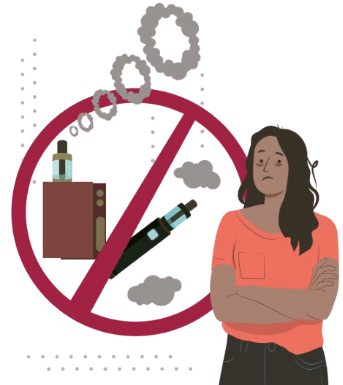

Vapeadores
¡Neta son tóxicos!
Propósito
Informar sobre los riesgos y daños que ocasiona el uso de vapeadores y dispositivos electrónicos que suministran nicotina
o sustancias tóxicas, desmontando la falsa idea de que son una alternativa segura al cigarro.
¿Qué son?
Los vapeadores o cigarrillos electrónicos son dispositivos que calientan un líquido (con o sin nicotina) para producir un vapor que se inhala.
Se han popularizado entre adolescentes y jóvenes por sus sabores y diseños llamativos, pero en realidad contienen sustancias químicas tóxicas
que afectan directamente los pulmones, el cerebro y el sistema cardiovascular.
Aunque se promocionan como una forma de dejar de fumar, la Organización Mundial de la Salud (OMS) ha advertido que no son seguros
y pueden generar adicción, especialmente cuando contienen nicotina o THC (componente psicoactivo del cannabis).
¿Qué contienen los vapeadores?
Los líquidos usados en los vapeadores contienen mezclas químicas dañinas, incluso si dicen ser “sin nicotina”.
Al calentarse, liberan compuestos tóxicos que pueden ser cancerígenos o provocar enfermedades respiratorias graves.
- Nicotina (altamente adictiva).
- Propilenglicol y glicerina vegetal (usados como solventes).
- Sustancias aromatizantes con compuestos químicos irritantes.
- Metales pesados como plomo, níquel y cadmio.
- Partículas ultrafinas que penetran profundamente en los pulmones.
Efectos durante su consumo
- Irritación en garganta, boca y vías respiratorias.
- Tos persistente y dificultad para respirar.
- Dolor de cabeza y mareos.
- Palpitaciones o aumento del ritmo cardíaco.
- Dependencia a la nicotina y ansiedad cuando no se consume.
Efectos después del consumo
El uso prolongado puede causar enfermedades pulmonares severas, inflamación crónica, hipertensión y daño cardiovascular.
También puede afectar el desarrollo cerebral en adolescentes, perjudicando la memoria, el aprendizaje y el control de impulsos.
Principales daños irreversibles a la salud
- Enfermedades respiratorias crónicas (como la bronquitis y el asma).
- Daño pulmonar agudo (“pulmón de vapeador”).
- Dependencia química a la nicotina y síndrome de abstinencia.
- Riesgo de convulsiones, irritabilidad y pérdida de concentración.
- Posible cáncer de pulmón o daños en el sistema nervioso central.

Ten presente:
- Los vapeadores no son inocuos ni ayudan a dejar de fumar.
- Contienen sustancias tóxicas que dañan gravemente los pulmones y el cerebro.
- Su uso en jóvenes incrementa la probabilidad de adicción a la nicotina u otras drogas.
Mitos y realidades
- Mito: “El vapeo no daña los pulmones.”
Realidad: Estudios científicos confirman que produce lesiones pulmonares graves e irreversibles.
- Mito: “El vapor es solo agua.”
Realidad: Contiene sustancias químicas y metales pesados que afectan las vías respiratorias y el sistema nervioso.
- Mito: “No causa adicción.”
Realidad: La nicotina de los vapeadores genera adicción igual que el tabaco tradicional.
- Mito: “Es mejor que fumar cigarros.”
Realidad: Ambos productos son dañinos y pueden llevar a enfermedades crónicas y adicción severa.